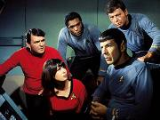
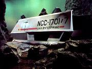
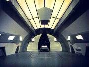
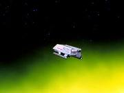
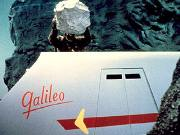
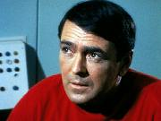
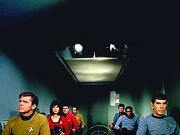

|
MANCHETE
DO EPISDIO
Segmento
trabalha emoes de Spock
Episdio
anterior | Prximo episdio
|
Sinopse:
Data Estelar: 2821.5
A Caminho de Markus 3
onde ir entregar suprimentos mdicos, A Enterprise para
investigar uma formao Quasar conhecida como Murasaki 312.
Sob os protestos do Alto comissrio Ferris que est a bordo para
supervisionar a entrega dos remdios. Kirk informa
a Ferris que tem ordens permanentes de estudar este tipo de ocorrncia
e decide mandar um shuttle
para investigar o fenmeno, pois haveria tempo para isto sem
prejudicar a entrega dos remedios. A bordo esto Spock, McCoy,
Scott e os tenentes Boma, Gaetano, Latimer
e Kelowitz alm da ordenana Mears.
Durante
o vo a forte interferncia gerada pelo Quasar interfere com os
instrumentos da nave Galileo, fazendo
com que ela se perca e acabe caindo em um planeta daquele sistema.
Com as comunicaes tambm sob interferncia a
Enterprise no consegue receber clareza as coordenadas do Shuttle
no momento do acidente, e alm disto, as mesmas radiaes que
tornaram inteis os sensores do Shuttle causaram o mesmo efeito aos
sensores da Enterprise deixando-a cega e acabando com sua capacidade
de Busca. Uhura consegue determinar que existe somente um planeta
capaz de sustentar vida na regio do Quasar, Taurus II, e Kirk ento
leva a nave para l.

Enquanto
isto, na superfcie do planeta, Spock e a tripulao do Shuttle
acidentado comeam a despertar da inconscincia causada pelo
impacto a queda, e felizmente no houve nenhuma baixa. Aps
constatar que eles no podem se comunicar com a Enterprise e que o
exterior da nave pode sustentar vida Spock
ordena que Scott comece a trabalhar nos reparos e que Latimer e
Gaetano montem guarda do lado de fora da nave. Longe da Enterprise,
perdidos, sem comunicao e sob influencia da forte interferncia
do Quasar, Spock no tem esperanas de que eles sejam encontrados
se permanecerem na superfcie.
No
espao Kirk fica ciente de que os sensores continuam inteis,
assim como o tele transporte, o que o obriga a enviar o outro
Shuttle, a Columbus para
realizar a busca. Ferris est a seu lado, cobra uma posio de
Kirk e este diz que pretendo procurar por seus tripulantes at o
ultimo minuto possvel. Ferris deixa claro que no ir estender
este prazo por motivo algum.
Na
superfcie, McCoy conversa com Spock a respeito de, apesar das
circunstncias, aquele
ser uma chance de Spock comandar, de forma lgica. O Vulcano afirma
ser sim uma pessoa lgica, mas que est ciente de que precisar
mais do que lgica pata tirar todos dali e que apesar da idia de
assumir o comando exera algum fascnio sobre ele, que tal idia
no lhe da medo, nem prazer e que Spock simplesmente a aceita uma
vez que tal possibilidade existe.
Scott
termina sua avaliao do estado do Shuttle, que no boa. A
neve no poder alcanar velocidade para fugir da rbita do
planeta, e mesmo assim, para manter rbita precisar se desfazer
de algum peso, que Spock calcula ser o equivalente a trs homens
adultos. McCoy argumenta que eles poderiam deixar algum equipamento
para trs, mas Spock diz que isto no possvel, pois todo o
equipamento a bordo vital para a operao da nave, o que leva o
tenente Boma a concluir que o imediato pretende deixar trs pessoas
para trs, se necessrio, pessoas que ele mesmo ir escolher, de
forma lgica. Tal idia no deixa os membros do grupo muito
confortveis.
Enquanto
isto Latimer e Gaetano esto explorando a rea ao redor do Shuttle
quando ouvem algo. Eles parecem estar cercados, mas no conseguem
ver pelo que. Antes que isto seja possvel Latimer atingido e
morto por rstica lana usada por uma das criaturas que habitam o
planeta. Spock e Boma, atrados pelo grito de Latimer, chegam ao
local mas nada podem fazer. Spock identifica a lana usada como
semelhante a usada por culturas indgenas da Terra, mas Boma,
consternado pela perda do companheiro fica ainda mais irritado ao
ouvir as consideraes tcnicas de Spock sobre o caso. Boma e
Gaetano levam o corpo de Latimer de volta a nave.

Enquanto
isto as buscas prosseguem sem resultados deixando Kirk cada vez mais
deprimido a ainda pressionado por Ferris. Com o tempo passando rpido
Kirk ordena que a Columbus abra mais o arco de procura a cada volta,
permitindo que uma rea maior seja coberta a cada passagem, mas
tornando ainda mais difcil a localizao do grupo. Ferris lembra
a Kirk que faltam apenas 24 horas para que nave tenha que deixa o
local.
No
Galileo, enquanto Scott e Spock trabalham nos reparos e os outros
membros do grupo tentam retirar peso da nave, a discusso sobre ter
que deixar algum para trs prossegue quando Boma chama a tripulao
para o funeral de Latimer. Spock resiste idia pois acha melhor
concentrar o tempo nos reparos da nave e pede que McCoy tome seu
lugar como capito na cerimnia improvisada. Tal atitude tambm no
muito bem vista pelo grupo, principalmente por McCoy.
Apesar
dos esforos de Spock e Scott, algo d errado durante os reparos e
o combustvel restante se perde deixando a situao ainda mais
complicada. Para
piorar, Spock percebe que os nativos que mataro Latimer esto se
movendo em direo a nave, possivelmente para atac-los. Mesmo
assim Spock pretende fazer o possvel para no matar nenhuma das
criaturas, o que mais uma vez provoca protestos dos membros do
grupo. Apesar dos protestos Spock concebe um plano que pretende
apenas assustar os nativos e com isto mant-los longe. Tal plano
executado aparentemente com sucesso.
Spock
deixa Gaetano de guarda e retorna com Boma para a Galileo, onde
Scott espera com uma nova idia: usar a energia dos fasers como
fonte de energia para os motores da nave. Scott acha difcil, mas
que pode ser feito, o problema que isto deixar o grupo sem
defesa alguma. O Engenheiro acha que poder fazer a nave alar vo
com todos a bordo, mas que no podero mant-la por muito tempo,
entretanto Spock lembra que isto no to importante uma vez que
em 24 horas a Enterprise ter que ir embora, deixando o grupo
entregue a prpria sorte. Eles comeam a trabalhar na idia de
Scott. Em rbita, a equipe tcnica da Enterprise consegue fazer os
transportes funcionarem, permitindo que Kirk envie grupos de busca a
superfcie, mas isto aumenta muito pouco as chances de sucesso.
Gaetano
atacado durante sua patrulha e o grupo perde mais um membro.
Spock, McCoy e Boma chegam ao local onde ele deveria estar e
encontram apenas o faser, ento o Vulcano manda que Spock e Boma
retornem a nave, levando a arma que era de Gaetano e a sua prpria
para Scott possa us-las enquanto ele pretende descobrir o que
aconteceu ao oficial desaparecido, mas tudo o que encontra o
corpo de Gaetano que ele carrega de volta a nave.
No
Shuttle Spock parece desorientado por seu plano para amedrontar os
nativos no ter funcionado to bem como ele havia planejado, o que leva a outra discusso com Boma e McCoy, discusso
interrompida pelo ataque das criaturas, que comeam a tentar abrir
o casco da Galileo com pedras, outra ao no antecipada, o que
deixa Spock ainda mais confuso.
Com
o grupo sob ataque McCoy e Boma passam a ser ainda mais hostis com
relao a abordagem lgica de Spock, que tenta entender por que
apesar de todo o seu curso lgico de ao eles teriam chegado a
tal ponto : dois homens mortos, a fria dos nativos contra a nave e
a irritao de seus comandados contra ele. O 1 oficial da
Enterprise parece prestes a se desfazer e perder totalmente o
controle da situao.

Na
enterprise Kirk est cada vez mais irritado, pois os sensores
voltam a funcionar lentamente e as esperanas ainda residem na
Columbus e nos grupos de busca. os grupos de busca que esto na
superfcie, enquanto Ferris continua infernizando a vida do
atribulado Capito, que pro sua vez tem cada vez menos pacincia
com o comissrio. .
Na
superfcie, justamente quando tudo parecia perdido, Spock tem um
surto de inspirao conforme sugeriu a ordenana Mears -. Ele
manda Scott usar a energia restante das baterias para eletrificar o
exterior da nave. O choque assusta e afasta momentaneamente os
atacantes da Galileo, dando a eles mais algum tempo, entretanto
desta vez Spock acha que eles voltaro em breve. Ele manda que
todos chequem as avarias e deixem a nave pronta para partir assim
que Scott concluir seu trabalho.
Mais
uma vez Boma insiste em realizar um funeral, desta vez para Gaetano,
com o que Spock discorda por expor os sobreviventes, mas Boma
insiste chegando prximo da insubordinao. Uma nova discusso
se inicia mas desta vez Spock a interrompe cedendo ao desejo de Boma
desde que as condies de segurana permitam.
A
bordo da Enterprise os grupos de desembarque esto retornando da
superfcie onde encontraram as mesmas criaturas com as quais o
grupo de Galileo havia se confrontado com resultado no muito
melhor. O tenente Kelowitz, lder de um dos grupos reporta um morto
e dois feridos. Ele tenta dizer a Kirk que
se o grupo de Spock encontrou com estas criaturas no como
ter sobrevivido, mas Kirk no parece querer ouvir este tipo de
informao. Outra informao que Kirk no querer ouvir mais que
Ferris faz questo de fornecer que o tempo acabou e que ele
precisa partir. Kirk se ainda faz meno a se negar mas Ferris usa
de sua autoridade e ordena a partida imediata da Enterprise. A
contra gosto, mas sem alternativas Kirk obrigado a trazer de
volta suas equipes de busca.
Na
superfcie, o grupo esta prestes a realizar sua tentativa de
decolagem. Spock manda Boma e McCoy aproveitarem os minutos antes da
decolagem para realizarem o funeral de Gaetano, e se oferece para
ajud-los, enquanto no Hangar da Enterprise a Columbus acaba de
retornar e todos os grupos de descida esto a bordo, no deixando
mais nenhum pretexto para que Kirk possa atrasar a partida. Ele
ordena a partida em fora de impulso apesar da velocidade de dobra
estar totalmente disponvel e manda as que todos os sensores
continuem apontando para Taurus II enquanto a nave se afasta.
No
planeta, o grupo atacado enquanto terminam de enterrar Gaetano.
Durante o ataque Spock fica
preso por uma rocha atirada contra eles. Apesar dos protestos do
Vulcano, Boma e McCoy voltam para busc-lo. Assim que os trs esto
a bordo Scott tenta lanar a nave, mas a mesma no sai do solo,
pois segura pelos nativos da Taurus. Spock usa os propulsores
para dar mais potencia a Shuttle. A estratgia funciona e eles
atingem altitude desejada, mas elimina qualquer possibilidade da
nave manter uma rbita controlada, ou de um pouso seguro, no
deixando outro destino a no ser, em aproximadamente 45 minutos, queimar na reentrada, uma vez que a Enterprise a aquela altura
j deve estar seguindo viagem para Markus III.
Spock
tenta mais uma vez contato com a Enterprise mas no obtm nenhuma
resposta. Ento, observando os instrumentos ele aciona uma espcie
de queimador, incendiando o combustvel restante e deixando todo grupo atnito com tal atitude, pois agora a
nave aguentara apenas mais seis minutos no mximo antes de cair.
Porm a Enterprise enxerga a faixa flamejante em Taurus, e Kirk
imediatamente ordena o retorno da nave. Na Galileo, ainda sem saber
que Kirk est voltando, Scott percebe que Spock tentou mandar uma
espcie de sinal visual, e apesar de achar arriscado, cumprimenta o
Vulcano pela tentativa, mas mesmo Spock no parece ter muita
esperana.
A
rbita comea a decair e o Shuttle a queimar enquanto McCoy faz
questo de lembrar a Spock que a ultima ao de sua vida pode ter
sido um ato totalmente humano. A fumaa comea a sufoc-los mas
na ultima hora eles so transportados a bordo da Enterprise. Uhura
d a noticia a Kirk de que cinco pessoas foram trazidas a bordo,
que aliviado ordena a Sulu que retome o curso para Markus III.
Algum
tempo depois, j com todos bem e de volta as suas funes, Kirk
interpela Spock a respeito de sua reao emocional na Galileo,
quando queimou as reservas que combustvel apostando em um plano
que ele mesmo achava que no daria certo. Teimoso, Spock tenta a
convencer aos presentes que sua ao logicamente explicvel,
sem muito sucesso e arrancando gargalhadas de todos os presentes.
Comentrios:
Galileo Seven
um Vo solo de Leonard Nimoy que permite que seu personagem
seja destrinchado centmetro por centmetro, mostrando do que
feito o filho de Sarek e Amanda. Este segmento pega um pouco do que
j havia sido insinuado nas edies anteriores da srie sobre o
carter e o comportamento de Spock e acrescenta ainda mais, se
tornando como nenhum outro uma base de referencia para quem deseja
compreender este
personagem de forma mais concreta.
A falsa encrenca
causada pelo acidente com o Galileo d a oportunidade de vermos o
Vulcano em ao, totalmente responsvel pela vida de seus
companheiros longe do ambiente controlado da Enterprise. Palavra a
palavra, fascinante ver como a mente deste personagem
trabalha, de forma analtica, centrada e voltada sempre para o
objetivo, sempre buscando alternativas e acreditando nas
possibilidades.

E estranho e ao
mesmo tempo gratificante perceber durante o desenrolar da trama que
Spock, em sua lgica exacerbada mais humano em sua crena na
sobrevivncia do que seus amigos, pois esta sempre buscando esta
sobrevivncia. Em uma situao to adversa quanto a que eles
enfrentam em Taurus II preciso mais do que lgica, como bem
disse McCoy. preciso
f, que mesmo sem saber, ele demonstra ter.
Spock centrado,
previdente, auto-confiante, experiente, com um senso de propsito
muito bem definido, pronto a se sacrificar por seus homens, e com
estas qualidades ele julga estar apto para a situao de comando,
e apesar da irritao de McCoy e do tenente Boma, ele faz tudo que
preciso ser feito, assumindo as responsabilidades que precisa
assumir. Ento, onde Spock parece falhar ? No uso da lgica,
mas sim na forma com se relaciona com seu grupo.
Para ser um lder
preciso que seus homens acreditem em voc, confiando e
respeitando, e tal relao precisa necessariamente ser uma via de
mo dupla. Assim como Spock falhou quando concluiu que as
criaturas de Taurus os respeitariam aps terem demonstrado sua
tecnologia superior, ele tambm falhou acreditar que apenas por
ficar claro que Spock era o mais apto para liderar aquele grupo, que
o grupo o aceitaria.

No inicio da
Historia das expedies ao plo sul, Ernest Shackleton foi um dos
homens que lideraram as primeiras expedies ao continente gelado.
Em uma dessas expedies que fracassaram Shackleton tentava
retornar ao continente em busca de ajuda para sua tripulao que
havia ficado para trs. Com ele dois homens escolhidos a dedo. A
certa altura da caminhada os homens disseram que precisavam dormir.
Shackleton sabia que se eles deitassem no gelo morreriam, mas
permitiu um descanso. Os dois homens exaustos deitaram e caram no
sono, ento, dois minutos depois seu lder os acordou dizendo:
Acordem, vocs j dormiram por meia hora.. Eles haviam
deitado apenas por dois minutos, mas no sabiam disto. A marcha
continuou e eles foram salvos.
Shackleton percebeu
a necessidade de seus homens, e as entendeu, apesar de saber que se
parassem eles morreriam, eles precisavam parar para sobreviver. Na
primeira etapa do episodio Spock no percebe as necessidades de
seus homens, ou as ignora por no serem lgicas, e por isto,
apesar de tomar decises corretas todo o tempo sempre
questionado.
Aps tomar cada
deciso de forma lgica, Spock podia esperar somente o melhor, que
as coisas pelo menos no piorassem. Mas no isso o que
acontece, pondo em cheque tudo o que o vulcano aprendeu durante toda
a sua vida, tido que norteou o caminho deste homem.
Neste momento em que as coisas no saem como planejadas, o
que aconteceria a um homem como Spock ? No caso de Galileo Seven
emerge o heri, aquele que se agarra a todas as possibilidades e
vai alm delas.
Se no inicio Spock
falha em ceder quando seus homens precisam, mesmo que ele no
julgue necessrio, ele percebe tal falha ao longo da sua experincia,
fato demonstrado quando cede a Boma em seu desejo de enterrar
Gaetano, mesmo que isto seja perigoso. Spock cresce na experincia
e aprende que certas circunstncias o todo pode sim, ser maior do
que as partes.

Mas tal experincia
no indolor nem mesmo a Spock, pois quando se v sem
alternativas, cercado por inimigos, com seus homens em sua volta
esperando que ele aja, homens de quem Spock ainda no
ganhou a confiana, temos a impresso de que o vulcano vai se
desmontar. O segmento leva o imediato da Enterprise a beira do
fracasso, expondo-o ao cenrio de no vencer e conseguindo extrair
um momento de superao absolutamente impar.
E a cena final dos
tripulantes a bordo do Galileo, onde Spock tem um surto de
emocionalidade repentina, acionando os foguetes e queimado pouco
combustvel que ele tinham numa idia na qual ele no acreditava
vai ficar para sempre na memria do f como uma das mais
significativas da historia da franquia.
O segmento tem sues
deslizes, a comear pela insistncia de Kirk em parar estudar um
fenmeno espacial no meio de uma viagem de emergncia. Acredito
que as ordens de Kirk de estudar tais fenmenos pudessem ser melhor
interpretadas, e que o capito da Enterprise tivesse a autonomia
para decidir o que era mais prioritrio.
A deciso de Kirk de mandar um Shuttle naquelas condies
parece mais uma teimosia contra Ferris do que uma rela necessidade.
Tal ao custou alm do pequeno atraso na chegada da nave a seu
destino, a perda de trs membros da tripulao e mais equipamento
da nave, no caso a neve Galileo. Para dizer o mnimo, Kirk foi
displicente.
O autor sabe que
isto j foi dito varias vezes, mas os tripulantes da
Enterprise parecem ridiculamente despreparados para lidar com
qualquer tipo de situao fora da nave, fato demonstrado pela
forma como Gaetano e Latimer conseguiram serem pegos to facilmente
por criaturas que apesar de fortes, no parecem l muito
inteligentes.
O que lembra outra
questo ? Por que dois oficiais de segurana e um engenheiro (s
chefe de engenharia da nave ) estariam fazendo a bordo de um veiculo
que tem como misso estudar um fenmeno espacial ? Nada, a no
ser que consertar a nave caso ela caia, no caso de Scott, ou morrer
de forma inglria, no caso de Gaetano e Latimer. Pura convenincia.
E uma coisa difcil
de entender que combustvel este que Spock incendiou ? Scott
passou o episodio inteiro descarregando fasers para poder alimentar
as fontes de energia do Shuttle, e que eu saiba um faser no usa
gasolina ou algo do tipo como fonte de energia. Principalmente uma
que seja capaz de queimar no vcuo, como foi o caso.
Mas como existem
situaes em que os fins justificam os meios, vamos esquecer tais
detalhes, em nome da liberdade criativa e do resultado alcanado,uma
vez que todas a situaes criadas tiveram sua importncia para o
(bom) resultado final e no chegam a ser uma agresso,
principalmente por que so recorrentes em diversos episdios da
franquia.

Alm de Nimoy,
Kelley tambm tem participao importante no segmento,
demonstrando o quanto o emocional McCoy tem de afeio pelo amigo
Spock, pois mesmo no estando cem por cento de acordo com as decises
de Spock, McCoy est sempre a seu lado, cobrando do Vulcano mas
dando o suporte que este precisa. O ator convidado Don Marshal tambm
d uma contribuio surpreendentemente como Boma, importante para
um personagem no regular. Sua quase insubordinao contra Spock
provoca uma reao no grupo fundamental para o sucesso do episdio.
Grata surpresa.
Shattner
tambm vai bem ao demonstrar sua preocupao com seus homens
perdidos, e acho tambm por causa da besteira que fez ao insistir
em mandar o Galileo, mas desta vez o capito da Enterprise
apenas um coadjuvante de luxo, nada mais, assim como Scott, que
apesar de reforar sua fama de fazedor de milagres, no faz muito
alm de passar o tempo todo deitado no piso do Shuttle. Mesmo John
Crawford (Comissrio Ferris) no l to importante para a
trama como se possa fazer parecer a princpio.
E
como todo bom episodio da Srie Clssica o segmento
apresenta doses certas de humor quando possvel e mais um daqueles
tradicionais momentos finais de descontrao na ponte memorveis.
Tecnicamente,
o episodio bem resolvido, com destaque para a construo de uma
nave auxiliar bastante convincente.
Resumindo,
este um episodio de Leonard Nimoy, e
que apesar dos pequenos deslizes merece figurar entre os mais
importantes da srie por nos dar a chance de conhecer to bem
nosso Vulcano favorito. Spock destaque absoluto e Nimoy arrebenta
na caracterizao, deixando definitivamente mais uma marca na
franquia.
Citaes:
Spock
- "There are always alternatives."
("Sempre existem alternativas.")
McCoy
- "Life and death are seldom logical."
("Vida
e morte raramente so
lgicas." )
Spock
- "It is more rational to sacrifice one life than six."
("
mais racional sacrificar um do que seis.")
Spock
- "I realize that command does have its fascination, even under
circumstances such as these, but I neither enjoy the idea of command
nor am I frightened of it. It simply exists, and I will do whatever
logically needs to be done."
("Eu
entendo que o comando tem sua fascinao, mesmo sob circuntncias
como estas, mas eu no sinto prazer nem medo na idia de comandar.
Ela simplesmente existe, e eu irei fazer o que precisa ser feito.")
Spock
- "I'm frequently appalled by the low regard you Earthmen have
for life."
("Eu
freqentemente me assusto com a baixa considerao que vocs da
Terra tm para com a vida".)
Kirk - "You're not
going to admit that for the first time in your life, you committed a
purely human, emotional act?"
("Voc no vai admitir que pela primeira vez em sua vida, voc
cometeu um ato puramente humano em emocional?")
Spock - "No, sir."
("No, senhor.")
Kirk - "Mr. Spock, you're
a stubborn man."
("Sr Spock, voc um homem muito teimoso.")
Spock - "Yes,
sir."
("Sim,
senhor")
Trivia:
 Primeira
apario dos ShuttleCrafts (ou naves auxiliares) na
srie.
Primeira
apario dos ShuttleCrafts (ou naves auxiliares) na
srie.
Dan
Marshal,
o tenente Boma, ficaria mais conhecido por seu papel em Land of the Giants onde
viveu um dos protagonistas da srie, o piloto Dan Erickson entre
1968 e 1970.
S.
Bar David,
que tambm assina como Shimon Wincelberg seria convidado a escrever
um dos roteiros planejados para Star Trek Fase II. Ele participou
ainda da Srie Clssica escrevendo a estria de Dagger of the
Mind.
Gene
Winfield,
responsvel pela construo do modelo da Galileo, seria o
designer dos veculos do clssico Blade Runner.
Ficha
tcnica:
Escrito
por Oliver Crawford e S. Bar-David
Direo de Robert Gist
Msica de Alexander Courage
Exibido
em 05/01/1967
Produo: 14
Elenco:
William Shatner como James Tiberius Kirk
Leonard Nimoy como Spock
DeForest Kelley como Leonard H. McCoy
Nichelle Nichols como Uhura
George
Takei como Hikaru Sulu
Elenco convidado:
Don
Marshall como Tenente Boma
John Crawford como Comissrio Ferris
Peter Marko com Tenente Gaetano
Phyllis Douglas como ordenana Mears
Reese Vaughn como Tenente Latimer
Grant Woods Tenente Comandante Lee Kelowitz
David L. Ross como Tenente Galloway
Tauriano
Buck Maffei
Episdio
anterior | Prximo episdio